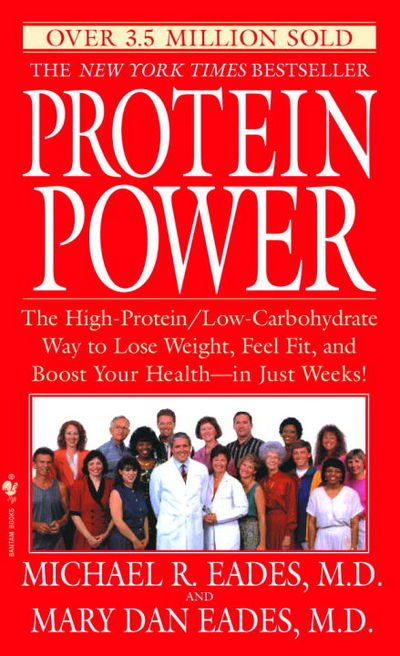

01
Protein Power
Workout of the Day - 12 February 2001
The Eades’ book Protein Power is a classic in responsible nutrition. Publishers of best selling books are typically not interested in publishing the author’s bibliography. Here are the foundations for Protein Power. Next time someone tells you that reduced carbohydrate diets are fads with no scientific basis ask them if they’ve read any of the hundreds of scholarly works cited by Michael and Mary Dan Eades.